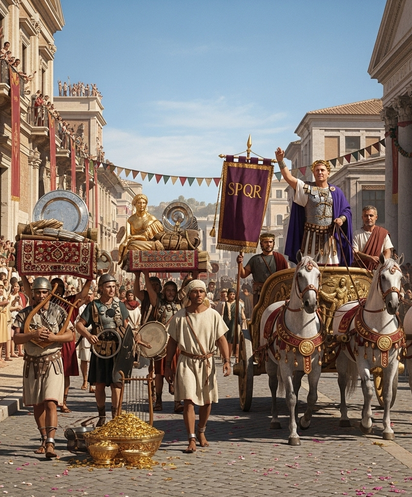

Gnaeus Pompeius Magnus, or Pompey the Great, as chronicled by Plutarch, is an emblematic figure of the late Roman Republic—a man whose life was a dramatic arc from brilliant young hero to a tragic victim of ambition. Plutarch’s account begins by noting the public's hatred for his father, a general of insatiable greed, and contrasts it with the instant and enduring affection the Roman people held for the young Pompey. He was a man of innate grace and dignity, his youthful appearance even drawing comparisons to Alexander the Great, a hero he would seek to emulate throughout his life.
Pompey's military genius was undeniable from a young age. Plutarch details how, in his early twenties, he raised his own army to support Sulla, earning the dictator's grudging admiration and the coveted nickname "Magnus," or "the Great." His subsequent campaigns were a series of triumphs that cemented his reputation as Rome’s premier general. He was given extraordinary command to rid the Mediterranean of a rampant pirate menace, a task he completed with astonishing speed and efficiency. He then went on to win a great victory against Mithridates VI of Pontus in the East, a campaign that brought immense wealth and prestige to Rome. Yet, for all his glory, Plutarch observes that Pompey was at heart a man of simple tastes, a quality that further endeared him to the people.
With his return from the East, Pompey was at the height of his power, a living legend. But his political life was far more complicated than his military one. Plutarch describes his uneasy alliance with Julius Caesar and Marcus Crassus in the First Triumvirate, a political pact that would ultimately lead to his downfall. As Caesar's power and influence in Gaul grew, the rivalry between the two became a central theme in Roman politics. Pompey, once the people's champion, was now seen by some as the last defender of the Republic against Caesar's burgeoning ambition. The final act of this tragic drama began with the crossing of the Rubicon, a civil war where Pompey, representing the established order, was forced to confront the man who had once been his ally and son-in-law.
Plutarch's account of Pompey’s final days is deeply poignant. After his decisive defeat by Caesar at the Battle of Pharsalus, Pompey fled to Egypt, seeking refuge. But there, in a final betrayal, he was murdered by agents of the boy-king Ptolemy XIII, a desperate act to curry favor with the victorious Caesar. Plutarch recounts the tragic sight of Pompey, pulling his toga over his head in a final gesture of dignity, being killed on the very shore where he had hoped to find safety. Caesar's later reaction to receiving Pompey’s head—a mixture of disgust and sorrow—only underscores the profound and sorrowful end to the life of a man who, in his youth, had seemed destined for eternal glory. Pompey’s life, as told by Plutarch, is a powerful and moving tragedy about the relentless march of time, the fleeting nature of glory, and the high price of political rivalry.